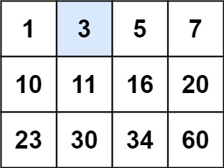
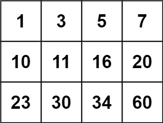

题面
给你一个满足下述两条属性的 m x n 整数矩阵：
- 每行中的整数从左到右按非严格递增顺序排列。
- 每行的第一个整数大于前一行的最后一个整数。
给你一个整数 target ，如果 target 在矩阵中，返回 true ；否则，返回 false 。
示例 1：

输入： matrix = [[1,3,5,7],[10,11,16,20],[23,30,34,60]], target = 3
输出： true示例 2：

输入： matrix = [[1,3,5,7],[10,11,16,20],[23,30,34,60]], target = 13
输出： false提示：
m == matrix.lengthn == matrix[i].length1 <= m, n <= 100-104 <= matrix[i][j], target <= 104
思路
- 把
m x n矩阵看成长度为m * n的一维有序数组，直接二分查找 - 和上一题（35. 搜索插入位置）完全一样的模板，只多了一步坐标转换
坐标转换
把一维下标 mid 转换成二维坐标：
row = mid // n # 第几行
col = mid % n # 第几列
matrix = [[1, 3, 5, 7], 展平后：[1, 3, 5, 7, 10, 11, 16, 20, 23, 30, 34, 60]
[10,11,16,20], 下标： 0 1 2 3 4 5 6 7 8 9 10 11
[23,30,34,60]]
mid = 5 → row = 5 // 4 = 1, col = 5 % 4 = 1 → matrix[1][1] = 11和上一题的对比
# 上一题：一维数组直接比
if nums[mid] < target:
# 本题：先转坐标再比
row = mid // n
col = mid % n
if matrix[row][col] < target:其余部分完全一样。
代码实现
class Solution:
def searchMatrix(self, matrix: List[List[int]], target: int) -> bool:
m = len(matrix)
n = len(matrix[0])
flat_matrix = m * n
left, right = 0, flat_matrix - 1
while left <= right:
mid = (left + right) // 2
row = mid // n
col = mid % n
if matrix[row][col] < target:
left = mid + 1
elif matrix[row][col] > target:
right = mid - 1
else:
return True
return False- 易错点：
- 除以 `n`（列数）不是 `m`（行数）：
mid // n得到行号，mid % n得到列号 - `right = flat_matrix - 1` 不是 `flat_matrix`：下标从 0 开始，最大是
m*n - 1 - 返回 `False` 不是 `left`：本题只需要判断存不存在，不需要返回插入位置
- 复杂度：时间 O(log(m × n))，空间 O(1)